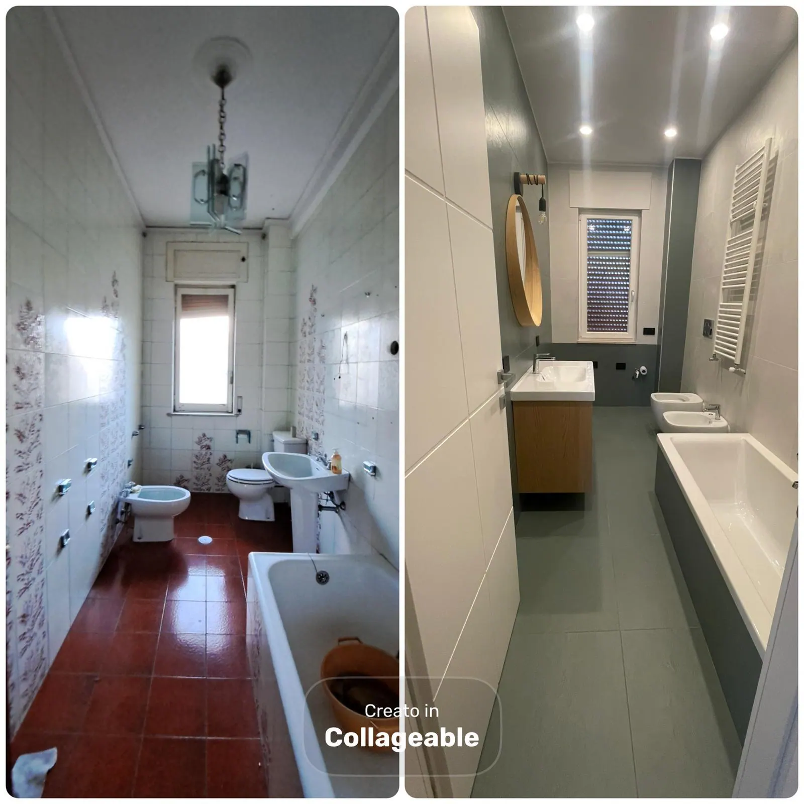
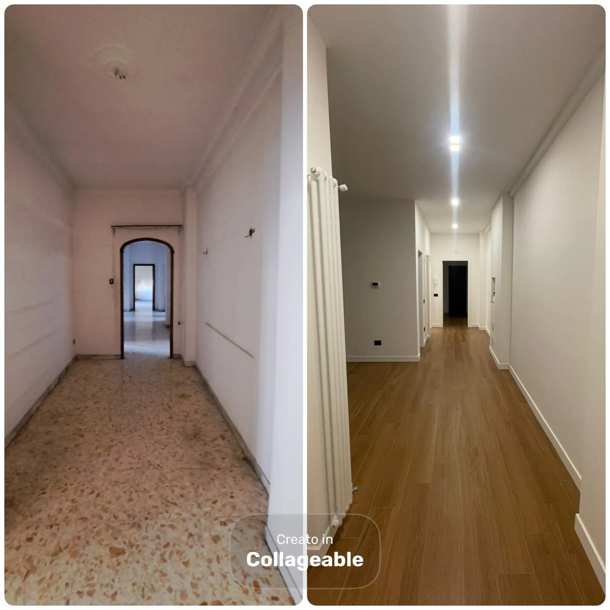
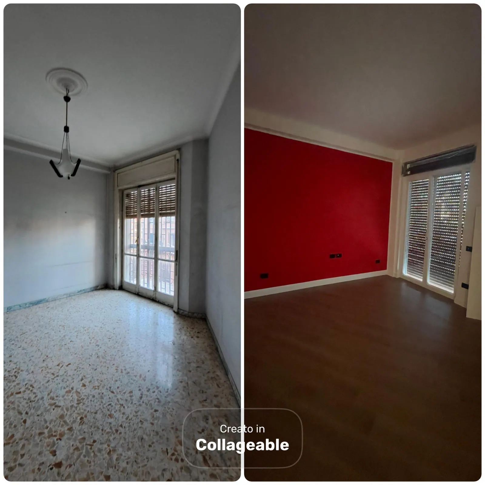
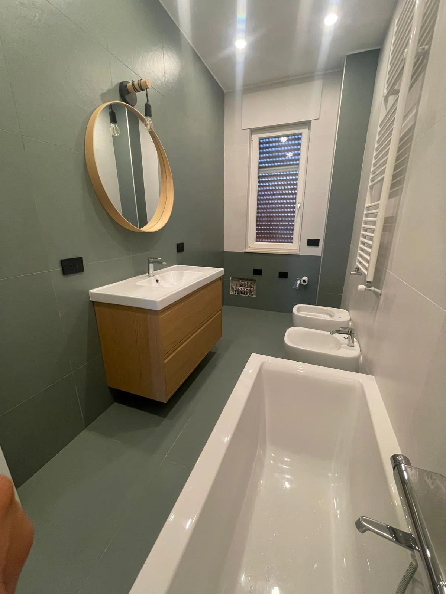
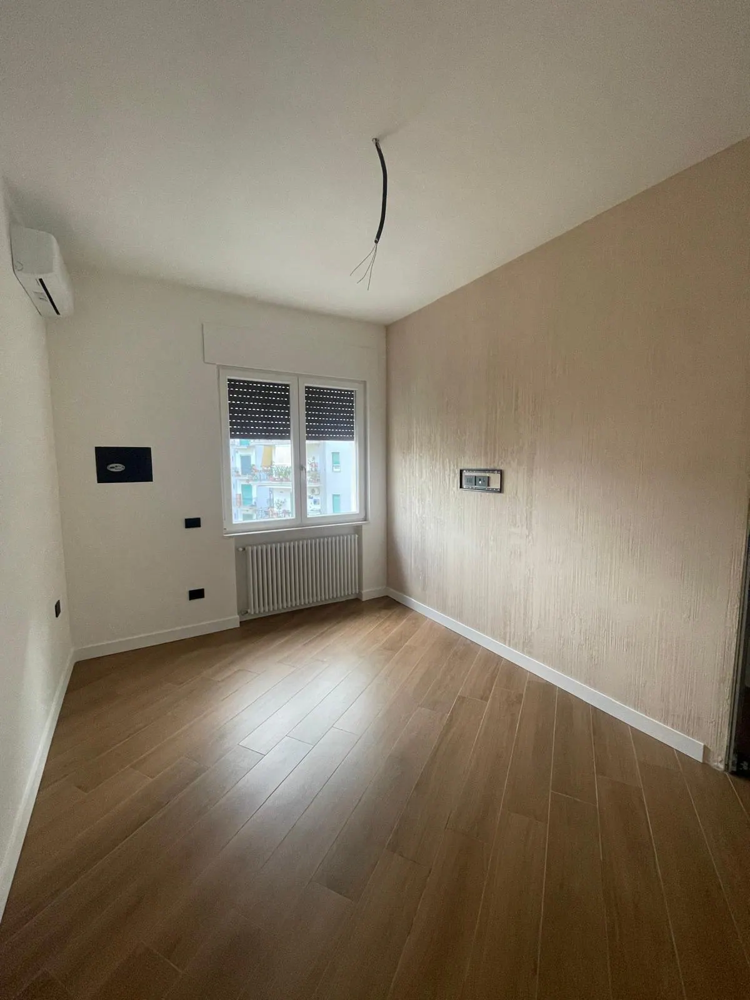
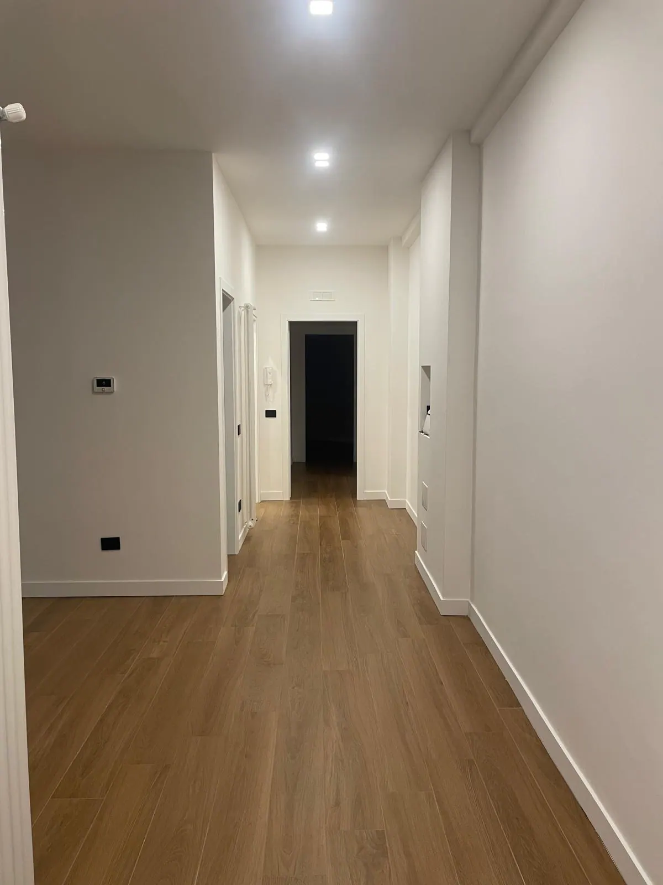

Prima / Dopo
Bagno completo
Rivestimenti, sanitari e finiture coordinate
Dal vecchio bagno a uno spazio funzionale, luminoso e curato nei dettagli tecnici.
Ristrutturiamo X Professione S.R.L. nasce con l'obiettivo di offrire un servizio edile completo, preciso e orientato alla qualita. Ogni progetto viene seguito con attenzione, dalla prima valutazione fino alla consegna finale, mettendo al centro le esigenze del cliente, la cura dei dettagli e la funzionalita degli spazi.
Metodo, lavori reali e contatto diretto restano sempre collegati, anche da mobile.
L'edilizia richiede coordinamento, precisione e presenza sul cantiere. Per questo lavoriamo con un approccio diretto: ascoltiamo, valutiamo, organizziamo le lavorazioni e accompagniamo il cliente fino al risultato finale.
Foto reali dei nostri interventi: stato iniziale, lavorazioni completate e dettagli delle finiture consegnate.

Prima / DopoDal vecchio bagno a uno spazio funzionale, luminoso e curato nei dettagli tecnici.

Prima / DopoUn passaggio stretto diventa ordinato, pulito e coerente con il resto della casa.

Prima / DopoPavimentazione, tinteggiatura e finiture cambiano la percezione dello spazio.

Dettaglio finitoMateriali, luce e componenti installati con attenzione alla resa finale.

FinitureUna stanza pronta per essere arredata, con superfici pulite e linee ordinate.

ConsegnaFiniture sobrie, posa ordinata e passaggi ben rifiniti.
I canali social raccolgono video, contenuti dietro le quinte e aggiornamenti sui lavori. Quando ci sono nuove foto reali dei cantieri, questa galleria puo essere aggiornata mantenendo lo stesso layout.
Ogni cantiere viene impostato per ridurre incertezze, tempi morti e improvvisazioni, mantenendo sempre il focus sulla qualita finale.
Valutiamo il lavoro prima di iniziare e definiamo un percorso operativo coerente.
Ogni fase viene controllata per integrare impianti, opere edili e finiture.
La resa finale dipende dai dettagli: bordi, giunti, superfici, allineamenti e pulizia.